Final Report
Abstract
For our final project, we created a fluid simulator using the Position Based Fluids (PBF) approach in OpenCL. Fluid simulators are used in a variety of computer graphics applications like movie and video game animation; and our group was interested in understanding how to write a program to model the complex properties of fluids realistically. Working from a premade GUI, we first implemented the algorithm published by Macklin and Mueller in 2013 to simulate water falling into an empty tank, and then altered the physics implementation to simulate other liquids. We used a 3D grid acceleration structure to improve the performance and achieved faster results generally by implementing the PBF algorithm in OpenCL.
Technical Approach
Implementing the PBF algorithm
To simulate the movement of fluids, we pursued a position-based approach by reimplementing the Macklin and Muller 2013 paper. Position-based approaches use a set of positional constraints to define update rules for each fluid point mass, rather than using forces to accomplish these updates. Macklin and Muller’s approach seeks to computationally imitate three primary fluid features:
A. Enforcing Incompressibility
A key fluid feature is incompressibility, or the property in which density does not change with pressure. In order to incorporate this constraint, each point mass is given a density, ⍴i, defined below:
| 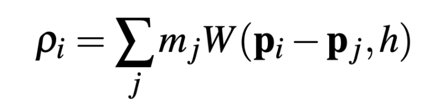 |
where j is the set of neighboring particles, m is the particle’s mass, and W is a smoothing kernel. Using the following constraints:
| 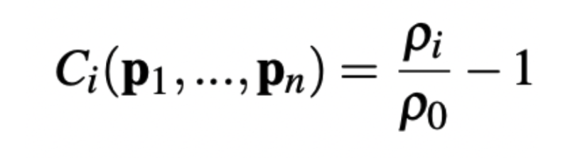 |
this implementation enforces incompressibility by finding a position Δp such that C(p+Δp) = 0. We accomplish this by computing the gradient of the constraint and using Newton’s method to find a step size along the gradient to satisfy the constraint. The calculation for this step size, λ, is shown below:
| 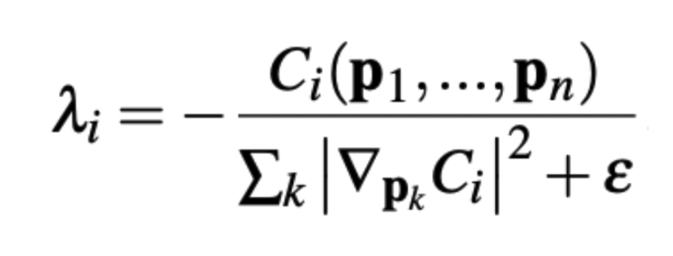 |
Once we have this step size, the final change in position is explicitly calculated in the expression shown below:
| 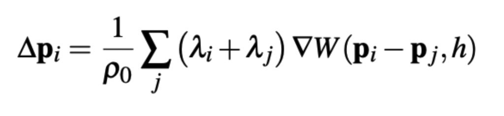 |
B. Tensile Instability
When particles have a small number of neighbors, the incompressibility constraints described above result in particles clumping together, creating an unrealistic effect. We resolve this by adding an artificial pressure term scorr to the Figure 4 equation. This results in an updated Δp equation, shown below:
| 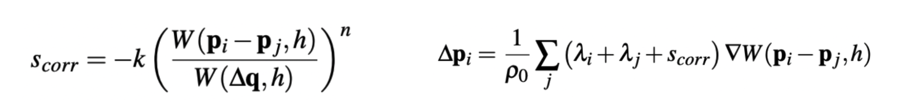 |
C. Vorticity and Viscosity
Lastly, we implement vorticity and viscosity to improve the realism of the simulation. Position-Based fluid approaches tend to dissipate energy quickly; by adding vorticity to simulate turbulent motion, we are able to replace some of this lost energy to create a more realistic simulation. Moreover, adding viscosity, which describes the inherent thickness of a fluid, allowed us to create a variety of different simulations, from simulating water to simulating thicker, slime-like substances.
Macklin and Muller’s final algorithm, implemented from their paper linked here, is shown below:
| 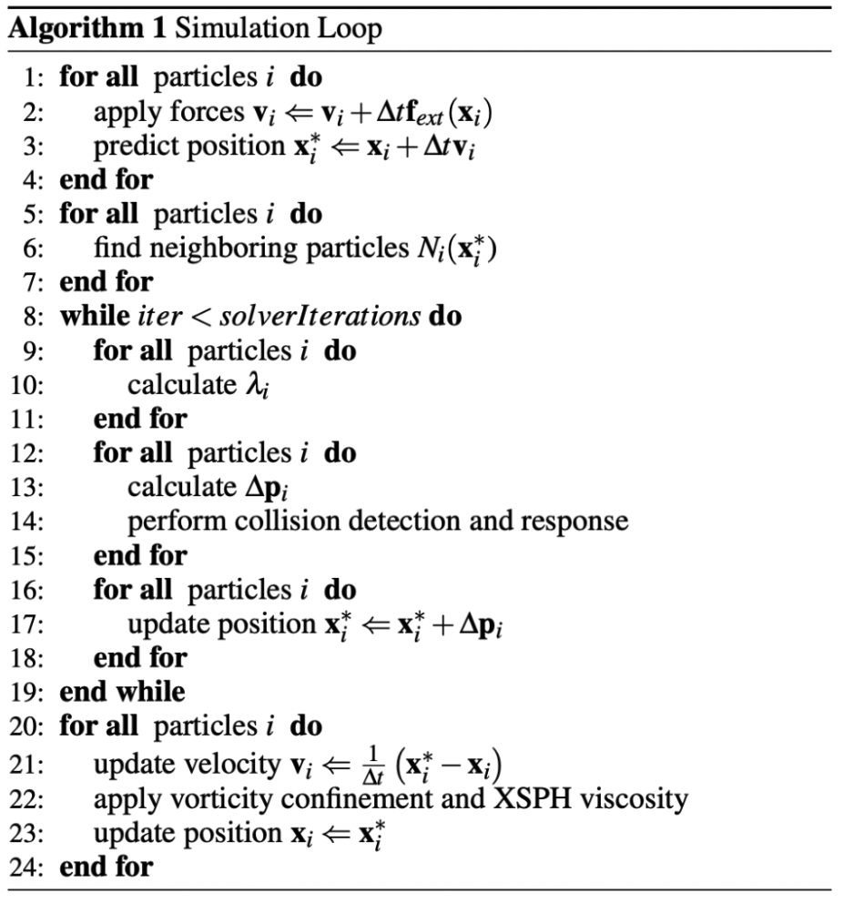 |
Performance speedup and additions
Performance speed up with particle bins
By default, for every particle pi, we would have to perform the above calculations between pi and every other particle pj in the tank. This O(N^2) runtime would be very inefficient as there are thousands of particles in the tank and this would all have to be computed every timestep. To speed up the performance of the algorithm, we implemented an acceleration structure whereby we split the volume of the tank into a 3D grid of bins such that the number of bins was equal to width * length * height / 4. This way, we only perform the above calculations between every particle ⍴i and the particles ⍴j in its neighboring bins, resulting in a much better runtime of O(N*log(N)).
To do this, we create a buffer to store the index of each bin from 0 to n = width * length * height / 4. Then for each timestep, we:
-
Place each particle into a bin based on its predicted position (position only after gravity is applied).
-
Compute the memory location offset of each bin by counting the number of particles in a given bin and multiplying that by the memory size of each particle position.
-
Repopulate the buffer storing all of the particles’ predicted positions using the memory location offsets computed above.
We perform this indexing in the loop of the algorithm as described by Macklin and Mueller above where it states to “find neighboring particles Ni”.
Simulating metallic liquids ("Mercury")
We wanted to see if we could make the simulated liquid behave like metallic liquids like mercury with some magnetic attraction forces. To do this, at every timestep we:
-
Compute the centroid of all of the particle positions to represent the center of attraction.
-
Offset the current velocity of each particle by a the vector point from the particle to the centroid multiplied by a small coefficient which we artificially call the “attraction constant”
We add this calculation into the step of the algorithm in which the velocities vi are updated. This way, the particles will tend to move to contract and expand around the center of the liquid volume until energy dissipates and the simulation slows down.
Results
|
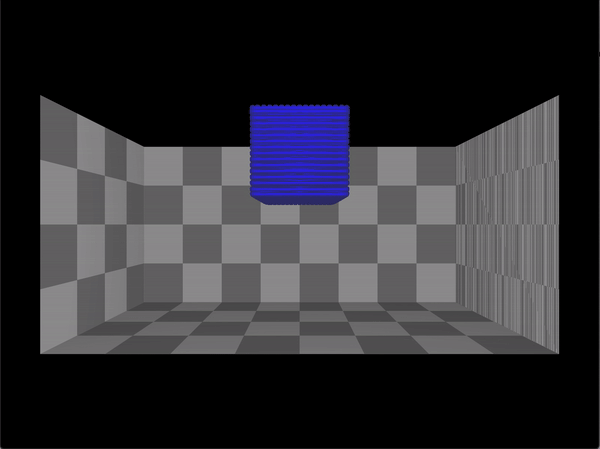
|
The above demo is our default simulation for water and shows a cube of water falling into a box. As you can see, the water particles stay together initially and then spread out when they collide with the bottom of the box, with some bouncing back up slightly, demonstrating the incompressibility of water.
|
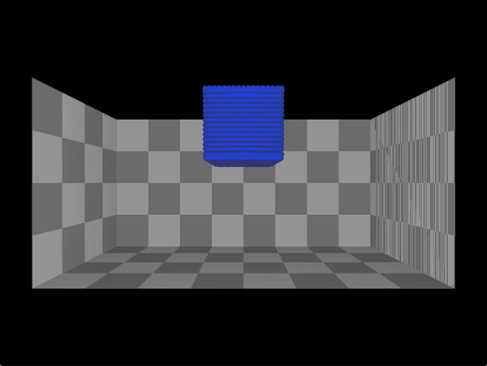
|

|
We experimented with the vorticity of our water simulation. Vorticity is used in our simulation to combat energy loss by introducing turbulent motion. The image on the right, with a higher vorticity value, exhibits more chaotic motion when compared to the figure on the left with lower vorticity.
|
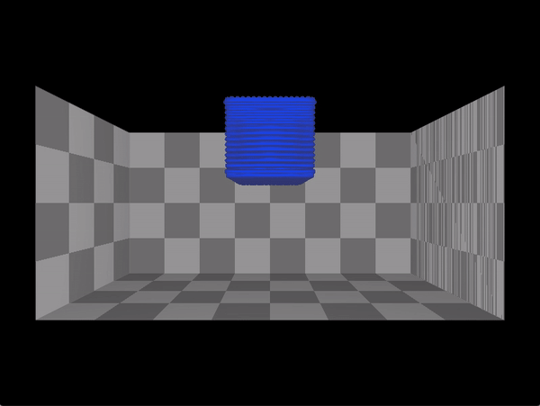
|
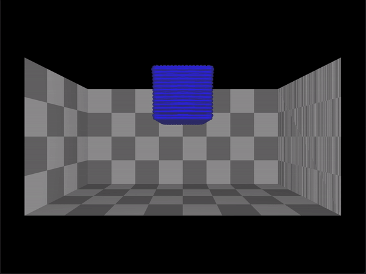
|
We also experimented with the viscosity values of our simulation. Viscosity is the inherent thickness of our fluid. The image on the right, with a higher viscosity, exhibits properties of a thicker fluid such as honey by bouncing up less after the collision with the bottom of the box.
|
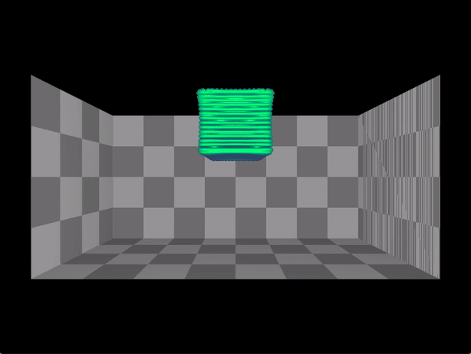
|
By experimenting with different parameters, we were able to recreate a slime-like substance, using higher viscosity and higher density values than we used for water.
|
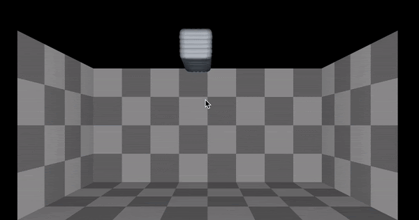
|
We also wrote a function to simulate liquids with magnetic properties like mercury as described above in the technical approach section.
References
Conceptual help:
Code sources:
Team member contributions
Yassin prepared up the initial project repository with the GUI from Dillon Yao's project and implemented the grid acceleration structure, the initial predict position function, and the functions that simulate the attraction effect of metallic liquids. He also put together the project webpages and helped debug the OpenCL code for the main PBF algorithm.
Jacob worked on implementing the calculations for Δp, the change in position of the particle, using the calculation from λ to determine where the particle would end up after each time step. He also worked on creating the demo gifs by experimenting with the fluid parameters and the different properties of the GUI.
Ashvin worked on implementing the calculations for Δp, specifically on calculating the λ value that Jacob then used to determine the final position. He also worked on modifying the shader code to change the fluid color, particle density, and particle size to create more realistic renderings.
Ishil implemented calculations for pi, which was the first step in calculating Δp, particularly on calculating the density values for each of the particles and their neighbors. He also helped prepare the slides for the professor and TA presentations and created the video overview for our final project submission.